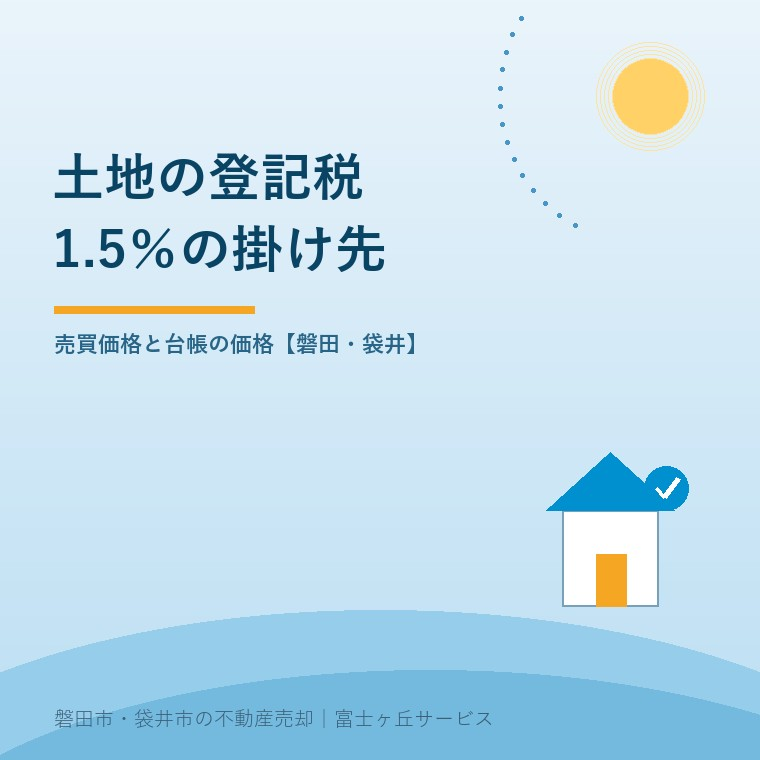
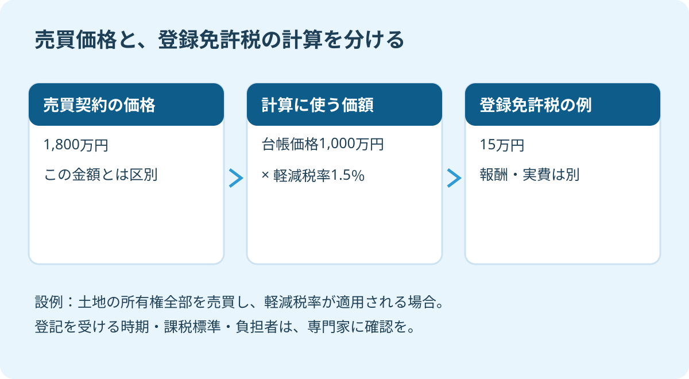

土地売買の登録免許税、1.5％は何に掛ける？
2026年9月16日｜カテゴリ：土地売却・登記費用

この記事の要点
Q. 土地を1,800万円で売るなら、登録免許税は27万円ですか。
土地売買の登録免許税は、原則として固定資産課税台帳の価格に税率を掛けます。2029年3月31日までの登記は1.5％。台帳価格1,000万円なら15万円の計算例となり、売買価格とは分けます。磐田市・袋井市・森町では、介護施設の運営から不動産事業を始めた富士ヶ丘サービスのような地域密着の会社に相談する選択肢があります。
土地の登記見積書に「登録免許税15万円」とある。売買価格は1,800万円なのに、1.5％を掛けた27万円と合わない。そんなときは、税率より先に、計算の土台になった金額を確かめてください。
大石浩之（磐田市／不動産業）です。宅地建物取引士として私は、登記費用を「司法書士に払うお金」の一括りで説明したくありません。国に納める税金と、手続きを依頼する報酬は別です。売主の家族も、どの金額が何の費用なのかを読める形にしたいと考えます。
土地売買の1.5％は、台帳の価格に掛ける
土地を売買したときの所有権移転登記では、登録免許税の課税標準は原則として固定資産課税台帳に登録された価格です。国税庁「No.7191 登録免許税の税額表」は、台帳に登録された価格がない場合には、登記官が認定した価額を使うと説明しています。
課税標準とは、税額を計算する土台となる金額のことです。売買契約書の価格は、売主と買主が合意した取引の金額。登記で使う価額は別の資料を基礎にしています。同じ土地でも、数字が一致するとは限りません。
国税庁の税額表は2026年4月1日現在の法令等に基づき、土地売買の本則を2％としています。2029年3月31日までの間に登記を受ける場合は、軽減税率1.5％です。この記事では2026年9月16日に記載を照合しました。
財務省「令和8年度税制改正の大綱」の二2（6）にも、土地売買による所有権移転登記等の軽減期限を3年延長するとあります。改正の方向だけで判断せず、国税庁の現行税額表でも期限を確かめています。
確認するのは「契約した日」だけではありません。国税庁は、期限までに登記を受ける場合と記載しています。2029年3月末に近い取引なら、契約日から逆算するだけで済ませず、登記の日程と適用を依頼先へ確認してください。
売買価格1,800万円でも、税額は27万円とは限らない
土地の売買価格と台帳の価格が異なると、売買価格から計算した税額も変わります。ここでは、売買価格1,800万円、固定資産課税台帳の価格1,000万円という説明用の設例を使います。実在の取引や磐田市の相場を示す数字ではありません。
土地の所有権全部を売買し、1.5％の軽減が適用されると仮定します。台帳価格1,000万円を課税標準とする計算は、1,000万円×0.015＝15万円です。司法書士報酬や証明書の取得費用などは、この15万円に含めていません。
| 比べる計算 | 計算式 | 金額 |
|---|---|---|
| 売買価格に掛けた数字 | 1,800万円×1.5％ | 27万円（この設例の税額ではない） |
| 台帳価格に軽減税率を掛ける | 1,000万円×1.5％ | 15万円 |
| 同じ台帳価格に本則を掛ける | 1,000万円×2％ | 20万円 |
売買価格を基礎にしてしまうと、この設例では12万円の差が出ます。一方、本則と軽減税率との差は5万円です。「1.5％だから安い」と聞くだけでは、この二つの違いを説明できません。何に掛けるかを取り違える影響は、税率の差より大きくなることもあります。
実際の計算では、移転する持分、複数の土地、課税標準や税額の端数処理なども確認が必要です。この記事は端数のない価額を使い、掛け算の土台を説明しています。全ての見積書が単純な掛け算だけで再現できると考えず、合わない部分は算出根拠を依頼先に聞いてください。

見積書は、価額・税率・負担者を別々に読む
登記見積書は、対象の不動産、登記の種類、計算に使う価額、税率、負担者を分けて読むのが私の提案です。「所有権移転」とだけ書かれていたら、土地なのか建物なのか、相続なのか売買なのかを確認します。
1.5％という数字を知っただけでは、見積書を読んだことになりません。私はこう考えます。売主が確かめたいのは、自分の取引で何を基に計算され、最終的に誰の持ち出しになるのかです。税率の暗記だけで終わらせたくありません。
私が軽減制度を評価するのは、同じ課税標準なら登記時の税負担を小さくできる点です。設例の5万円は、家族が資金予定に入れられる具体的な金額になります。見積書に税額が独立していれば、報酬と混ぜずに確認できます。
そのうえで、見積書を出す側には、計算に使った価額の出所まで示してほしい。私はそう考えます。「一式」の合計だけでは、税額が違うのか、依頼する仕事が違うのかを家族が判断できません。比較するなら、まず同じ作業範囲にそろえる必要があります。
売主側で相続登記や住所の変更、抵当権抹消などの準備があるなら、土地売買の所有権移転とは行を分けます。買主側を含む登記費用の総額と、売主の精算額は同じではありません。費用の負担は契約書と見積書を照合し、担当者の説明を受けてください。
決済時の入出金を整理するなら、決済当日に動くお金の確認がつながります。見積書の金額を資金表へ移すときは、「支払先」と「負担する人」の両方を書きます。司法書士へ渡すから全額が報酬、とは扱いません。
磐田・袋井の家族は、土地の明細から照合する
磐田市・袋井市で実家の土地を売る家族には、手元の固定資産税の課税明細と、登記見積書の対象地番を照らすところから始めるよう、私は案内します。地番は土地を特定するための番号です。家の住所だけで照合せず、どの土地の行を見ているかを確かめます。
例えば、実家の宅地と離れた土地が同じ通知書に載っている場合を想定します。家族が「土地の合計価格」を見積書へ伝えても、売るのが宅地だけなら対象が合いません。反対に、売買対象の土地が複数あるなら、明細の一行だけでは確認が足りません。
「価格」「評価額」と、固定資産税を計算する「課税標準額」は同じ欄とは限りません。登録免許税の課税標準という言葉を見て、通知書の課税標準額を機械的に拾わないでください。国税庁が示す基礎は、原則として台帳に登録された価格です。固定資産税通知書の見方と合わせ、欄の名称を確認します。
書類を見つけたら、土地の所在・地番、年度、価格の欄が分かる状態で依頼先へ示します。どの年度の証明を取り直すかは、申請時期も含めて司法書士に確認します。紙が古いかもしれないと感じても、自分で別の金額へ書き換える必要はありません。
私にも迷いはあります。売主家族に細かい計算まで求めると、書類の前で手が止まってしまう。ただ、「専門家が計算したから」で全て閉じると、家族は支出の理由を知らないままです。私は、家族が税額を確定するところまで求めず、基礎となる価格の出所を一つ説明してもらうところを着地点にします。
古い建物が付いた売買なら、土地と建物の税額を分けます。土地の1.5％を建物や相続登記へそのまま掛けないでください。個別の計算は依頼先に任せつつ、対象の違いは売主家族も確認できます。
今日することは、見積額の根拠を1行で聞くこと
土地売買の登記費用について今日できる確認は、「この登録免許税は、どの資料の何円に、何％を掛けていますか」と依頼先へ聞くことです。金額だけの回答なら、対象の地番と登記の種類も添えてもらいます。
- 台帳の価格と売買価格を別々に書く。
- 土地売買の税率と、登記を受ける予定時期を確認する。
- 税金・報酬・実費を分け、契約上の負担者を確かめる。
売却後に残る金額を考えるには、売値より手取りで考える実家売却へ数字をつなげます。登記見積書の全額を売主の支出欄に移す前に、負担する範囲を確定してください。
富士ヶ丘サービスは、磐田・袋井に根ざし、介護と不動産を一体で相談できる窓口を設けています。親の施設費用や相続後の支出も含め、家族が困らない売却のために資金の流れを整理します。私は、値引き交渉の前に、見積書の金額が何を表しているかを説明できる状態にします。税務・登記・相続の個別判断は専門家に確認を。
よくある質問
契約や申請の準備で確かめたい疑問に答えます。
- 登録免許税は、土地の売買価格に1.5％を掛けますか。
- 土地売買による所有権移転登記では、原則として固定資産課税台帳に登録された価格を基礎に計算します。売主と買主が決めた売買価格に、そのまま1.5％を掛けるものではありません。台帳に価格がない場合は登記官が認定する価額を使います。見積書の価額がどの資料に基づくか、司法書士や登記所に確認してください。
- 土地売買の1.5％は、いつまでの軽減税率ですか。
- 国税庁の2026年4月1日現在の税額表では、土地売買による所有権移転登記は2029年3月31日まで1.5％です。本則は2％です。売買契約を結んだ日だけで期限内と判断せず、登記を受ける時期を確認します。建物や相続登記に同じ税率を広げず、実際の適用と税額は専門家に確認を。
- 登記見積書の金額は、すべて売主が払うのですか。
- 登記見積書の合計を、そのまま売主の負担額として扱わないでください。土地の所有権移転、売主側の名義整理、抵当権抹消など、どの登記の費用かを分けます。登録免許税、司法書士報酬、実費の内訳と、契約上の負担者を照合してください。税務・登記の個別判断は専門家に確認を。

この記事を書いた人：大石浩之（磐田市／不動産業・宅地建物取引士）
富士ヶ丘サービス株式会社。介護施設の運営から不動産事業を始め、磐田市・袋井市・森町で、介護と相続、実家の売却を一体で相談できる窓口を設けています。家族が困らない売却のため、資料と現地の条件を一件ずつ整理します。著者プロフィール
本記事は2026年9月16日時点の公開情報と筆者の意見です。制度・数値・手続きは変更されることがあります。税務・登記・相続の個別判断は税理士・司法書士などの専門家に確認を。契約の効力や解除の可否は、契約書と経緯を示して弁護士に確認してください。